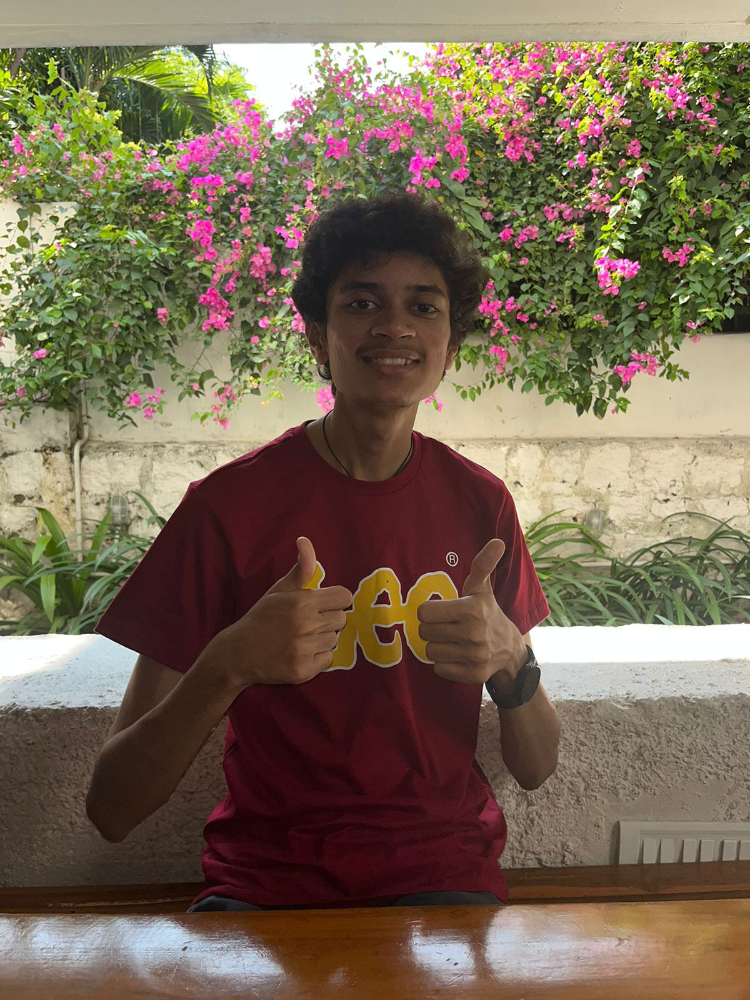

->Software enthusiast interested in learning new technologies.
->A part of the NAND to Tetris course
offered by the university of Jerusalem in building a computer from a NAND gate and desigining an assembler
to convert Hack Assembly Language to a Machine Language.
->Believes in life long learning.

EDUCATION
School
SilverOaks International School
Percentage
95.2%
Intermediate
FIITJEE
Percentage and JEE Percentile
94.6 and 98
Undergraduation
CBIT
GPA
9.64
SKILLS
Programming in C,C++,JAVA
System Design and Computer Design
HTML,CSS and JavaScript.
Full Stack development.
Data Structures and Algorithms
PROJECTS
Development of Hack Assembler as part of the NAND to Tetris course offered by University of Jerusalem